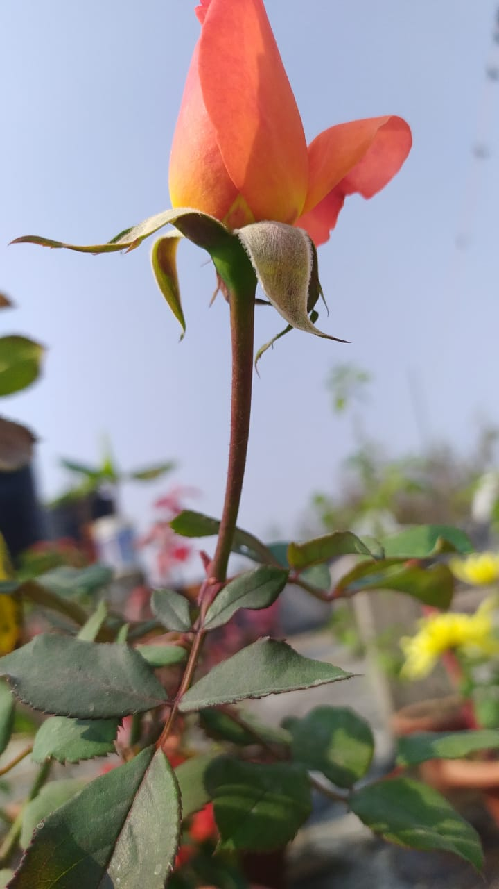

Rose
A rose is a woody perennial flowering plant of the genus Rosa, in the family Rosaceae, or the flower it bears. There are over three hundred species and tens of thousands of cultivars. They form a group of plants that can be erect shrubs, climbing, or trailing, with stems that are often armed with sharp prickles.Their flowers vary in size and shape and are usually large and showy, in colours ranging from white through yellows and reds. Most species are native to Asia, with smaller numbers native to Europe, North America, and northwestern Africa.Species, cultivars and hybrids are all widely grown for their beauty and often are fragrant.
Rose
Why FlowerInfo ?
Why we're different?
- Believe in doing our work with honesty.
- Make sure optimized information should reach to you all.
- Serve for the betterment of customers.
- Focus on enhancing knowledge.
- Our website is an encyclopedia.

What Clients Say
FlowerInfo is really an amazing website it contains various facts and figures which can help you to enlighten you half knowledge.

Sheissuru
Co-founder at FlowerCare
FlowerInfo is awesome,i've been using this site for so long while gathering informtion to make new projects.

Ericson
Director at writometer

Follow Flowerinfo on our social media to stay tuned with us.Thank you!
CONTACT US
 Near Nakshatravan,Ranchi
Near Nakshatravan,Ranchi
 +0651 2460366
+0651 2460366
 flowerinfo@gmail.com
flowerinfo@gmail.com
Website Created by Sheissuru